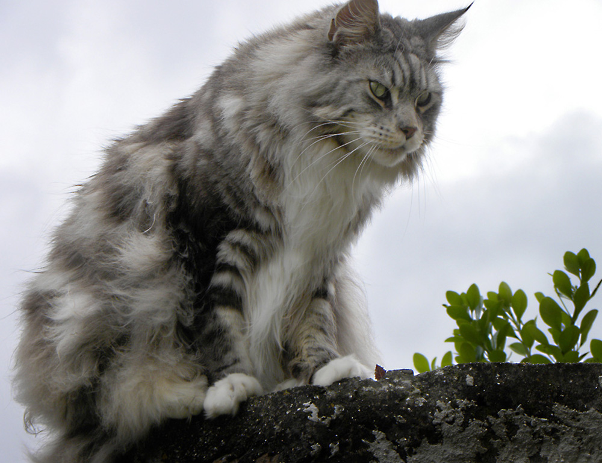
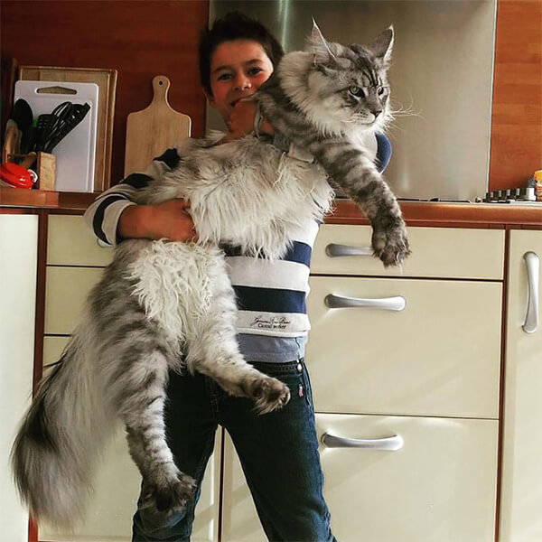

Уход за
Мейн-куном
Мейн-куны умеют производить впечатление своей внешностью — гигантскими размерами, красивой шерстью, ушами с кисточками, мощными лапами, одетыми в «штанишки». На первый взгляд может показаться, что эти домашние рыси требуют особенных условий содержания. На самом деле уход за мейн-куном несложен, если знать привычки этих животных и придерживаться простых правил.
Куна не следует содержать в малогабаритной квартире — это крупная активная кошка, которой требуется жизненное пространство, хотя бы в силу её немаленькой величины. Животные этой породы недёшевы в содержании, прежде всего из-за затрат на питание — мейн-кунам его требуется больше, чем обычным кошкам, но в целом они неприхотливы, отличаются хорошим здоровьем и покладистым характером, что немаловажно при уходе за ними.
Как и всех кошек, мейн-кунов можно кормить как сухими кормами, так и натуральной пищей. Сухой корм должен быть супер премиум-класса: в нём уже есть необходимые витамины и пищевые добавки, необходимые для правильного развития животного. Натуральное питание кошки состоит из мясных (80% рациона) и овощных, злаковых, кисломолочных ингредиентов. Для мейн-кунов рекомендуют варёное мясо и субпродукты (птицу, крольчатину, говядину, нежирную баранину, куриные сердечки и печёнку), морскую варёную рыбу, овощи (морковь, кабачки, тыкву, свёклу), твёрдый сыр, крупы и отруби, яйца, морскую капусту. В приготовленной специально для кошки пище не должно быть специй, соли и сахара. Если животное питается натуральными кормами, ему обязательно надо давать витамины. Запрещены категорически: куриные и говяжьи кости, тяжёлое мясо (жирная свинина, утка, гусь), острые и копчёные мясопродукты, колбасы, сахар и шоколад, картофель и бобовые. Уход за мейн-куном предполагает в первую очередь заботу о здоровье питомца.

Кунов, как и кошек других пород, надо прививать раз в год от бешенства, кальцивироза, панлейкопении и ринотрахеита, а также периодически обрабатывать от клещей, блох и гельминтов. Даже если животное не покидает дома, личинки паразитов могут быть занесены на подошвах обуви, а если кошку вывозят на дачу или она часто участвует в выставках, вакцинация и дегельминтизация для неё жизненно необходимы.

Уход за мейн-куном — это не только забота о внешнем виде и здоровье питомца, но и минуты общения с животным, жаждущим внимания. Пусть некоторые процедуры и не слишком приятны для кошки, но, если человек и его питомец доверяют друг другу, ни купание, ни стрижка когтей, ни приём таблеток не станут неразрешимой проблемой.

КОШКИН ДОМ